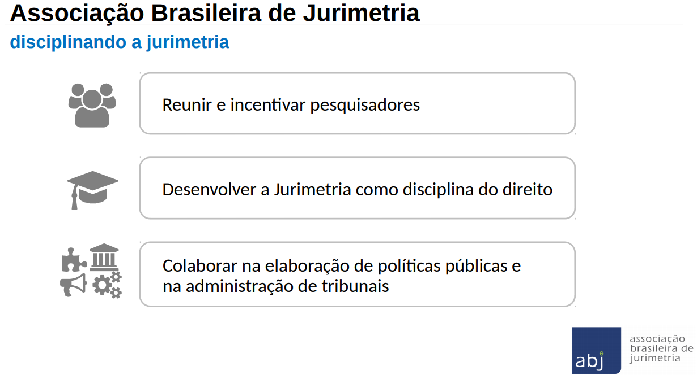

2.1 O que é Jurimetria?
A jurimetria é o estudo empírico do direito. Ela se distingue das demais disciplinas jurídicas por tratar o direito de forma concreta.
A pesquisa em jurimetria utiliza dados do judiciário para avaliar desde argumentos quantitativos a serem utilizados por juristas e advogados até o impacto de leis. No Brasil, é utilizada principalmente como ferramenta para
- auxiliar na formulação de políticas públicas e
- melhorar a administração dos tribunais.
A jurimetria está para o Direito da mesma forma que a econometria, a biometria e a sociometria estão, respectivamente, para a Economia, Biologia e Sociologia. O Direito, embora conte com algumas áreas tradicionalmente mais empíricas que outras, ainda não tem uma disciplina mais formalizada.
Nesse sentido, uma das missões da Associação Brasileira de Jurimetria (ABJ) é incentivar e divulgar a jurimetria aos seus associados e ao público em geral. Nossos estudos e pesquisas visam a difusão e o desenvolvimento do campo no Brasil, agregando pesquisadores e fornecendo o ferramental necessário para realização das análises.

Neste curso, apresentaremos o ferramental de trabalho desenvolvido no laboratório da ABJ. As ferramentas servem principalmente para extração e arrumação de dados, deixando o caminho livre para realização de análises estatísticas mais aprofundadas.